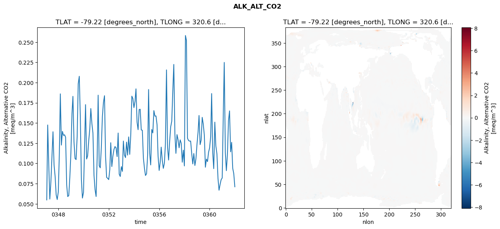
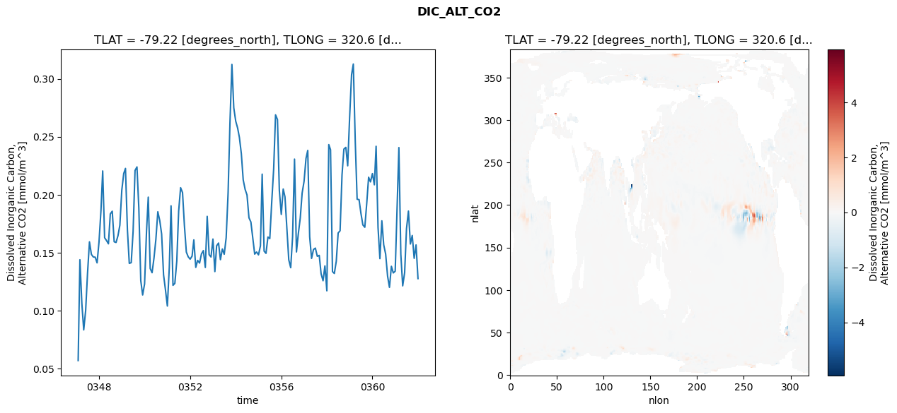
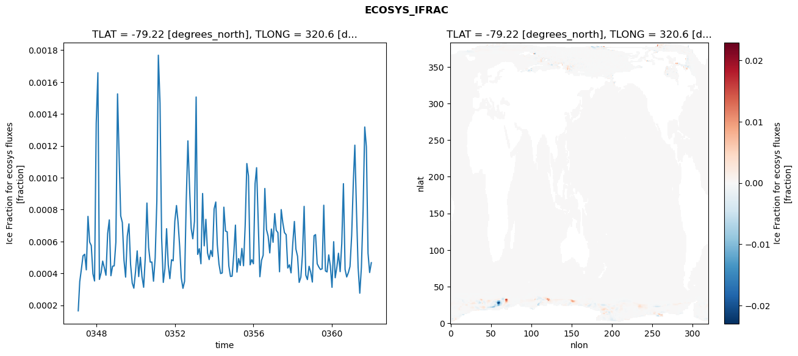
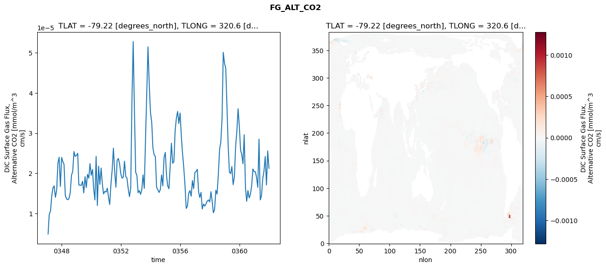

glb-dor_North_Atlantic_basin_037_1999-01-01_00148#
Simulation details#
Case: smyle.cdr-atlas-v0.glb-dor_North_Atlantic_basin_037_1999-01-01_00148.001
Basin: North_Atlantic_basin
Polygon: 37.0
Start date: 1999-01
Show code cell source Hide code cell source
import xarray as xr
import matplotlib.pyplot as plt
Show code cell source Hide code cell source
zarr_store = "/path/to/zarr/store"
# Parameters
zarr_store = "/global/cfs/projectdirs/m4746/Projects/Ocean-CDR-Atlas-v0/data/validation/smyle.cdr-atlas-v0.glb-dor_North_Atlantic_basin_037_1999-01-01_00148.001.validation.zarr"
Show code cell source Hide code cell source
%%time
ds_o = xr.open_zarr(zarr_store).compute()
ds_o
CPU times: user 644 ms, sys: 413 ms, total: 1.06 s
Wall time: 1.38 s
<xarray.Dataset> Size: 2MB
Dimensions: (nlat: 384, nlon: 320, time: 180)
Coordinates:
TLAT float64 8B -79.22
TLONG float64 8B 320.6
ULAT float64 8B -78.95
ULONG float64 8B 321.1
* time (time) object 1kB 0347-02-01 00:00:00 ... 0362-01-01 0...
z_t float32 4B 500.0
Dimensions without coordinates: nlat, nlon
Data variables:
ALK_ALT_CO2_diff (nlat, nlon) float32 492kB nan nan nan ... nan nan nan
ALK_ALT_CO2_rmse (time) float64 1kB 0.05485 0.1476 ... 0.08754 0.07109
DIC_ALT_CO2_diff (nlat, nlon) float32 492kB nan nan nan ... nan nan nan
DIC_ALT_CO2_rmse (time) float64 1kB 0.05676 0.1438 ... 0.1566 0.1275
ECOSYS_IFRAC_diff (nlat, nlon) float32 492kB nan nan nan ... nan nan nan
ECOSYS_IFRAC_rmse (time) float64 1kB 0.000165 0.0003481 ... 0.0004668
FG_ALT_CO2_diff (nlat, nlon) float32 492kB nan nan nan ... nan nan nan
FG_ALT_CO2_rmse (time) float64 1kB 4.885e-06 9.719e-06 ... 2.124e-05xarray.Dataset
- nlat: 384
- nlon: 320
- time: 180
- TLAT()float64-79.22
- long_name :
- array of t-grid latitudes
- units :
- degrees_north
array(-79.22052261)
- TLONG()float64320.6
- long_name :
- array of t-grid longitudes
- units :
- degrees_east
array(320.56250892)
- ULAT()float64-78.95
- long_name :
- array of u-grid latitudes
- units :
- degrees_north
array(-78.95289509)
- ULONG()float64321.1
- long_name :
- array of u-grid longitudes
- units :
- degrees_east
array(321.12500894)
- time(time)object0347-02-01 00:00:00 ... 0362-01-...
- bounds :
- time_bound
- long_name :
- time
array([cftime.DatetimeNoLeap(347, 2, 1, 0, 0, 0, 0, has_year_zero=True), cftime.DatetimeNoLeap(347, 3, 1, 0, 0, 0, 0, has_year_zero=True), cftime.DatetimeNoLeap(347, 4, 1, 0, 0, 0, 0, has_year_zero=True), cftime.DatetimeNoLeap(347, 5, 1, 0, 0, 0, 0, has_year_zero=True), cftime.DatetimeNoLeap(347, 6, 1, 0, 0, 0, 0, has_year_zero=True), cftime.DatetimeNoLeap(347, 7, 1, 0, 0, 0, 0, has_year_zero=True), cftime.DatetimeNoLeap(347, 8, 1, 0, 0, 0, 0, has_year_zero=True), cftime.DatetimeNoLeap(347, 9, 1, 0, 0, 0, 0, has_year_zero=True), cftime.DatetimeNoLeap(347, 10, 1, 0, 0, 0, 0, has_year_zero=True), cftime.DatetimeNoLeap(347, 11, 1, 0, 0, 0, 0, has_year_zero=True), cftime.DatetimeNoLeap(347, 12, 1, 0, 0, 0, 0, has_year_zero=True), cftime.DatetimeNoLeap(348, 1, 1, 0, 0, 0, 0, has_year_zero=True), cftime.DatetimeNoLeap(348, 2, 1, 0, 0, 0, 0, has_year_zero=True), cftime.DatetimeNoLeap(348, 3, 1, 0, 0, 0, 0, has_year_zero=True), cftime.DatetimeNoLeap(348, 4, 1, 0, 0, 0, 0, has_year_zero=True), cftime.DatetimeNoLeap(348, 5, 1, 0, 0, 0, 0, has_year_zero=True), cftime.DatetimeNoLeap(348, 6, 1, 0, 0, 0, 0, has_year_zero=True), cftime.DatetimeNoLeap(348, 7, 1, 0, 0, 0, 0, has_year_zero=True), cftime.DatetimeNoLeap(348, 8, 1, 0, 0, 0, 0, has_year_zero=True), cftime.DatetimeNoLeap(348, 9, 1, 0, 0, 0, 0, has_year_zero=True), cftime.DatetimeNoLeap(348, 10, 1, 0, 0, 0, 0, has_year_zero=True), cftime.DatetimeNoLeap(348, 11, 1, 0, 0, 0, 0, has_year_zero=True), cftime.DatetimeNoLeap(348, 12, 1, 0, 0, 0, 0, has_year_zero=True), cftime.DatetimeNoLeap(349, 1, 1, 0, 0, 0, 0, has_year_zero=True), cftime.DatetimeNoLeap(349, 2, 1, 0, 0, 0, 0, has_year_zero=True), cftime.DatetimeNoLeap(349, 3, 1, 0, 0, 0, 0, has_year_zero=True), cftime.DatetimeNoLeap(349, 4, 1, 0, 0, 0, 0, has_year_zero=True), cftime.DatetimeNoLeap(349, 5, 1, 0, 0, 0, 0, has_year_zero=True), cftime.DatetimeNoLeap(349, 6, 1, 0, 0, 0, 0, has_year_zero=True), cftime.DatetimeNoLeap(349, 7, 1, 0, 0, 0, 0, has_year_zero=True), cftime.DatetimeNoLeap(349, 8, 1, 0, 0, 0, 0, has_year_zero=True), cftime.DatetimeNoLeap(349, 9, 1, 0, 0, 0, 0, has_year_zero=True), cftime.DatetimeNoLeap(349, 10, 1, 0, 0, 0, 0, has_year_zero=True), cftime.DatetimeNoLeap(349, 11, 1, 0, 0, 0, 0, has_year_zero=True), cftime.DatetimeNoLeap(349, 12, 1, 0, 0, 0, 0, has_year_zero=True), cftime.DatetimeNoLeap(350, 1, 1, 0, 0, 0, 0, has_year_zero=True), cftime.DatetimeNoLeap(350, 2, 1, 0, 0, 0, 0, has_year_zero=True), cftime.DatetimeNoLeap(350, 3, 1, 0, 0, 0, 0, has_year_zero=True), cftime.DatetimeNoLeap(350, 4, 1, 0, 0, 0, 0, has_year_zero=True), cftime.DatetimeNoLeap(350, 5, 1, 0, 0, 0, 0, has_year_zero=True), cftime.DatetimeNoLeap(350, 6, 1, 0, 0, 0, 0, has_year_zero=True), cftime.DatetimeNoLeap(350, 7, 1, 0, 0, 0, 0, has_year_zero=True), cftime.DatetimeNoLeap(350, 8, 1, 0, 0, 0, 0, has_year_zero=True), cftime.DatetimeNoLeap(350, 9, 1, 0, 0, 0, 0, has_year_zero=True), cftime.DatetimeNoLeap(350, 10, 1, 0, 0, 0, 0, has_year_zero=True), cftime.DatetimeNoLeap(350, 11, 1, 0, 0, 0, 0, has_year_zero=True), cftime.DatetimeNoLeap(350, 12, 1, 0, 0, 0, 0, has_year_zero=True), cftime.DatetimeNoLeap(351, 1, 1, 0, 0, 0, 0, has_year_zero=True), cftime.DatetimeNoLeap(351, 2, 1, 0, 0, 0, 0, has_year_zero=True), cftime.DatetimeNoLeap(351, 3, 1, 0, 0, 0, 0, has_year_zero=True), cftime.DatetimeNoLeap(351, 4, 1, 0, 0, 0, 0, has_year_zero=True), cftime.DatetimeNoLeap(351, 5, 1, 0, 0, 0, 0, has_year_zero=True), cftime.DatetimeNoLeap(351, 6, 1, 0, 0, 0, 0, has_year_zero=True), cftime.DatetimeNoLeap(351, 7, 1, 0, 0, 0, 0, has_year_zero=True), cftime.DatetimeNoLeap(351, 8, 1, 0, 0, 0, 0, has_year_zero=True), cftime.DatetimeNoLeap(351, 9, 1, 0, 0, 0, 0, has_year_zero=True), cftime.DatetimeNoLeap(351, 10, 1, 0, 0, 0, 0, has_year_zero=True), cftime.DatetimeNoLeap(351, 11, 1, 0, 0, 0, 0, has_year_zero=True), cftime.DatetimeNoLeap(351, 12, 1, 0, 0, 0, 0, has_year_zero=True), cftime.DatetimeNoLeap(352, 1, 1, 0, 0, 0, 0, has_year_zero=True), cftime.DatetimeNoLeap(352, 2, 1, 0, 0, 0, 0, has_year_zero=True), cftime.DatetimeNoLeap(352, 3, 1, 0, 0, 0, 0, has_year_zero=True), cftime.DatetimeNoLeap(352, 4, 1, 0, 0, 0, 0, has_year_zero=True), cftime.DatetimeNoLeap(352, 5, 1, 0, 0, 0, 0, has_year_zero=True), cftime.DatetimeNoLeap(352, 6, 1, 0, 0, 0, 0, has_year_zero=True), cftime.DatetimeNoLeap(352, 7, 1, 0, 0, 0, 0, has_year_zero=True), cftime.DatetimeNoLeap(352, 8, 1, 0, 0, 0, 0, has_year_zero=True), cftime.DatetimeNoLeap(352, 9, 1, 0, 0, 0, 0, has_year_zero=True), cftime.DatetimeNoLeap(352, 10, 1, 0, 0, 0, 0, has_year_zero=True), cftime.DatetimeNoLeap(352, 11, 1, 0, 0, 0, 0, has_year_zero=True), cftime.DatetimeNoLeap(352, 12, 1, 0, 0, 0, 0, has_year_zero=True), cftime.DatetimeNoLeap(353, 1, 1, 0, 0, 0, 0, has_year_zero=True), cftime.DatetimeNoLeap(353, 2, 1, 0, 0, 0, 0, has_year_zero=True), cftime.DatetimeNoLeap(353, 3, 1, 0, 0, 0, 0, has_year_zero=True), cftime.DatetimeNoLeap(353, 4, 1, 0, 0, 0, 0, has_year_zero=True), cftime.DatetimeNoLeap(353, 5, 1, 0, 0, 0, 0, has_year_zero=True), cftime.DatetimeNoLeap(353, 6, 1, 0, 0, 0, 0, has_year_zero=True), cftime.DatetimeNoLeap(353, 7, 1, 0, 0, 0, 0, has_year_zero=True), cftime.DatetimeNoLeap(353, 8, 1, 0, 0, 0, 0, has_year_zero=True), cftime.DatetimeNoLeap(353, 9, 1, 0, 0, 0, 0, has_year_zero=True), cftime.DatetimeNoLeap(353, 10, 1, 0, 0, 0, 0, has_year_zero=True), cftime.DatetimeNoLeap(353, 11, 1, 0, 0, 0, 0, has_year_zero=True), cftime.DatetimeNoLeap(353, 12, 1, 0, 0, 0, 0, has_year_zero=True), cftime.DatetimeNoLeap(354, 1, 1, 0, 0, 0, 0, has_year_zero=True), cftime.DatetimeNoLeap(354, 2, 1, 0, 0, 0, 0, has_year_zero=True), cftime.DatetimeNoLeap(354, 3, 1, 0, 0, 0, 0, has_year_zero=True), cftime.DatetimeNoLeap(354, 4, 1, 0, 0, 0, 0, has_year_zero=True), cftime.DatetimeNoLeap(354, 5, 1, 0, 0, 0, 0, has_year_zero=True), cftime.DatetimeNoLeap(354, 6, 1, 0, 0, 0, 0, has_year_zero=True), cftime.DatetimeNoLeap(354, 7, 1, 0, 0, 0, 0, has_year_zero=True), cftime.DatetimeNoLeap(354, 8, 1, 0, 0, 0, 0, has_year_zero=True), cftime.DatetimeNoLeap(354, 9, 1, 0, 0, 0, 0, has_year_zero=True), cftime.DatetimeNoLeap(354, 10, 1, 0, 0, 0, 0, has_year_zero=True), cftime.DatetimeNoLeap(354, 11, 1, 0, 0, 0, 0, has_year_zero=True), cftime.DatetimeNoLeap(354, 12, 1, 0, 0, 0, 0, has_year_zero=True), cftime.DatetimeNoLeap(355, 1, 1, 0, 0, 0, 0, has_year_zero=True), cftime.DatetimeNoLeap(355, 2, 1, 0, 0, 0, 0, has_year_zero=True), cftime.DatetimeNoLeap(355, 3, 1, 0, 0, 0, 0, has_year_zero=True), cftime.DatetimeNoLeap(355, 4, 1, 0, 0, 0, 0, has_year_zero=True), cftime.DatetimeNoLeap(355, 5, 1, 0, 0, 0, 0, has_year_zero=True), cftime.DatetimeNoLeap(355, 6, 1, 0, 0, 0, 0, has_year_zero=True), cftime.DatetimeNoLeap(355, 7, 1, 0, 0, 0, 0, has_year_zero=True), cftime.DatetimeNoLeap(355, 8, 1, 0, 0, 0, 0, has_year_zero=True), cftime.DatetimeNoLeap(355, 9, 1, 0, 0, 0, 0, has_year_zero=True), cftime.DatetimeNoLeap(355, 10, 1, 0, 0, 0, 0, has_year_zero=True), cftime.DatetimeNoLeap(355, 11, 1, 0, 0, 0, 0, has_year_zero=True), cftime.DatetimeNoLeap(355, 12, 1, 0, 0, 0, 0, has_year_zero=True), cftime.DatetimeNoLeap(356, 1, 1, 0, 0, 0, 0, has_year_zero=True), cftime.DatetimeNoLeap(356, 2, 1, 0, 0, 0, 0, has_year_zero=True), cftime.DatetimeNoLeap(356, 3, 1, 0, 0, 0, 0, has_year_zero=True), cftime.DatetimeNoLeap(356, 4, 1, 0, 0, 0, 0, has_year_zero=True), cftime.DatetimeNoLeap(356, 5, 1, 0, 0, 0, 0, has_year_zero=True), cftime.DatetimeNoLeap(356, 6, 1, 0, 0, 0, 0, has_year_zero=True), cftime.DatetimeNoLeap(356, 7, 1, 0, 0, 0, 0, has_year_zero=True), cftime.DatetimeNoLeap(356, 8, 1, 0, 0, 0, 0, has_year_zero=True), cftime.DatetimeNoLeap(356, 9, 1, 0, 0, 0, 0, has_year_zero=True), cftime.DatetimeNoLeap(356, 10, 1, 0, 0, 0, 0, has_year_zero=True), cftime.DatetimeNoLeap(356, 11, 1, 0, 0, 0, 0, has_year_zero=True), cftime.DatetimeNoLeap(356, 12, 1, 0, 0, 0, 0, has_year_zero=True), cftime.DatetimeNoLeap(357, 1, 1, 0, 0, 0, 0, has_year_zero=True), cftime.DatetimeNoLeap(357, 2, 1, 0, 0, 0, 0, has_year_zero=True), cftime.DatetimeNoLeap(357, 3, 1, 0, 0, 0, 0, has_year_zero=True), cftime.DatetimeNoLeap(357, 4, 1, 0, 0, 0, 0, has_year_zero=True), cftime.DatetimeNoLeap(357, 5, 1, 0, 0, 0, 0, has_year_zero=True), cftime.DatetimeNoLeap(357, 6, 1, 0, 0, 0, 0, has_year_zero=True), cftime.DatetimeNoLeap(357, 7, 1, 0, 0, 0, 0, has_year_zero=True), cftime.DatetimeNoLeap(357, 8, 1, 0, 0, 0, 0, has_year_zero=True), cftime.DatetimeNoLeap(357, 9, 1, 0, 0, 0, 0, has_year_zero=True), cftime.DatetimeNoLeap(357, 10, 1, 0, 0, 0, 0, has_year_zero=True), cftime.DatetimeNoLeap(357, 11, 1, 0, 0, 0, 0, has_year_zero=True), cftime.DatetimeNoLeap(357, 12, 1, 0, 0, 0, 0, has_year_zero=True), cftime.DatetimeNoLeap(358, 1, 1, 0, 0, 0, 0, has_year_zero=True), cftime.DatetimeNoLeap(358, 2, 1, 0, 0, 0, 0, has_year_zero=True), cftime.DatetimeNoLeap(358, 3, 1, 0, 0, 0, 0, has_year_zero=True), cftime.DatetimeNoLeap(358, 4, 1, 0, 0, 0, 0, has_year_zero=True), cftime.DatetimeNoLeap(358, 5, 1, 0, 0, 0, 0, has_year_zero=True), cftime.DatetimeNoLeap(358, 6, 1, 0, 0, 0, 0, has_year_zero=True), cftime.DatetimeNoLeap(358, 7, 1, 0, 0, 0, 0, has_year_zero=True), cftime.DatetimeNoLeap(358, 8, 1, 0, 0, 0, 0, has_year_zero=True), cftime.DatetimeNoLeap(358, 9, 1, 0, 0, 0, 0, has_year_zero=True), cftime.DatetimeNoLeap(358, 10, 1, 0, 0, 0, 0, has_year_zero=True), cftime.DatetimeNoLeap(358, 11, 1, 0, 0, 0, 0, has_year_zero=True), cftime.DatetimeNoLeap(358, 12, 1, 0, 0, 0, 0, has_year_zero=True), cftime.DatetimeNoLeap(359, 1, 1, 0, 0, 0, 0, has_year_zero=True), cftime.DatetimeNoLeap(359, 2, 1, 0, 0, 0, 0, has_year_zero=True), cftime.DatetimeNoLeap(359, 3, 1, 0, 0, 0, 0, has_year_zero=True), cftime.DatetimeNoLeap(359, 4, 1, 0, 0, 0, 0, has_year_zero=True), cftime.DatetimeNoLeap(359, 5, 1, 0, 0, 0, 0, has_year_zero=True), cftime.DatetimeNoLeap(359, 6, 1, 0, 0, 0, 0, has_year_zero=True), cftime.DatetimeNoLeap(359, 7, 1, 0, 0, 0, 0, has_year_zero=True), cftime.DatetimeNoLeap(359, 8, 1, 0, 0, 0, 0, has_year_zero=True), cftime.DatetimeNoLeap(359, 9, 1, 0, 0, 0, 0, has_year_zero=True), cftime.DatetimeNoLeap(359, 10, 1, 0, 0, 0, 0, has_year_zero=True), cftime.DatetimeNoLeap(359, 11, 1, 0, 0, 0, 0, has_year_zero=True), cftime.DatetimeNoLeap(359, 12, 1, 0, 0, 0, 0, has_year_zero=True), cftime.DatetimeNoLeap(360, 1, 1, 0, 0, 0, 0, has_year_zero=True), cftime.DatetimeNoLeap(360, 2, 1, 0, 0, 0, 0, has_year_zero=True), cftime.DatetimeNoLeap(360, 3, 1, 0, 0, 0, 0, has_year_zero=True), cftime.DatetimeNoLeap(360, 4, 1, 0, 0, 0, 0, has_year_zero=True), cftime.DatetimeNoLeap(360, 5, 1, 0, 0, 0, 0, has_year_zero=True), cftime.DatetimeNoLeap(360, 6, 1, 0, 0, 0, 0, has_year_zero=True), cftime.DatetimeNoLeap(360, 7, 1, 0, 0, 0, 0, has_year_zero=True), cftime.DatetimeNoLeap(360, 8, 1, 0, 0, 0, 0, has_year_zero=True), cftime.DatetimeNoLeap(360, 9, 1, 0, 0, 0, 0, has_year_zero=True), cftime.DatetimeNoLeap(360, 10, 1, 0, 0, 0, 0, has_year_zero=True), cftime.DatetimeNoLeap(360, 11, 1, 0, 0, 0, 0, has_year_zero=True), cftime.DatetimeNoLeap(360, 12, 1, 0, 0, 0, 0, has_year_zero=True), cftime.DatetimeNoLeap(361, 1, 1, 0, 0, 0, 0, has_year_zero=True), cftime.DatetimeNoLeap(361, 2, 1, 0, 0, 0, 0, has_year_zero=True), cftime.DatetimeNoLeap(361, 3, 1, 0, 0, 0, 0, has_year_zero=True), cftime.DatetimeNoLeap(361, 4, 1, 0, 0, 0, 0, has_year_zero=True), cftime.DatetimeNoLeap(361, 5, 1, 0, 0, 0, 0, has_year_zero=True), cftime.DatetimeNoLeap(361, 6, 1, 0, 0, 0, 0, has_year_zero=True), cftime.DatetimeNoLeap(361, 7, 1, 0, 0, 0, 0, has_year_zero=True), cftime.DatetimeNoLeap(361, 8, 1, 0, 0, 0, 0, has_year_zero=True), cftime.DatetimeNoLeap(361, 9, 1, 0, 0, 0, 0, has_year_zero=True), cftime.DatetimeNoLeap(361, 10, 1, 0, 0, 0, 0, has_year_zero=True), cftime.DatetimeNoLeap(361, 11, 1, 0, 0, 0, 0, has_year_zero=True), cftime.DatetimeNoLeap(361, 12, 1, 0, 0, 0, 0, has_year_zero=True), cftime.DatetimeNoLeap(362, 1, 1, 0, 0, 0, 0, has_year_zero=True)], dtype=object) - z_t()float32500.0
- long_name :
- depth from surface to midpoint of layer
- positive :
- down
- units :
- centimeters
- valid_max :
- 537500.0
- valid_min :
- 500.0
array(500., dtype=float32)
- ALK_ALT_CO2_diff(nlat, nlon)float32nan nan nan nan ... nan nan nan nan
- cell_methods :
- time: mean
- grid_loc :
- 3111
- long_name :
- Alkalinity, Alternative CO2
- units :
- meq/m^3
array([[ nan, nan, nan, ..., nan, nan, nan], [ nan, nan, nan, ..., nan, nan, nan], [ 0.01025391, -0.0168457 , -0.00976562, ..., nan, nan, nan], ..., [ nan, nan, nan, ..., nan, nan, nan], [ nan, nan, nan, ..., nan, nan, nan], [ nan, nan, nan, ..., nan, nan, nan]], dtype=float32) - ALK_ALT_CO2_rmse(time)float640.05485 0.1476 ... 0.08754 0.07109
- cell_methods :
- time: mean
- grid_loc :
- 3111
- long_name :
- Alkalinity, Alternative CO2
- units :
- meq/m^3
array([0.0548475 , 0.1475791 , 0.09756946, 0.05589687, 0.07715455, 0.10814083, 0.13921114, 0.09806606, 0.08422498, 0.06112098, 0.05532025, 0.06465329, 0.11248132, 0.18608833, 0.12268556, 0.13968727, 0.13467614, 0.135468 , 0.13244444, 0.07348838, 0.05901425, 0.06022954, 0.08273792, 0.11243511, 0.16132106, 0.18302539, 0.12664671, 0.10611185, 0.10473961, 0.13300619, 0.19865076, 0.20783792, 0.15716046, 0.07986453, 0.0571526 , 0.06414345, 0.12190447, 0.17277606, 0.10546357, 0.10939865, 0.12810779, 0.14200105, 0.16793489, 0.14912617, 0.13777306, 0.08526701, 0.06763543, 0.05906168, 0.10839179, 0.18447646, 0.09704601, 0.09455251, 0.1196539 , 0.15752836, 0.17541511, 0.1838003 , 0.10930113, 0.08280195, 0.08159418, 0.08000743, 0.09228039, 0.12565161, 0.09611105, 0.10880311, 0.11717461, 0.12085751, 0.1193493 , 0.10843375, 0.13762992, 0.08669358, 0.08383947, 0.09606217, 0.09016858, 0.12769784, 0.11040896, 0.10717677, 0.12640869, 0.11026253, 0.13284179, 0.11119983, 0.13533478, 0.18325303, 0.1803428 , 0.16910373, 0.17687288, 0.19228282, 0.15104465, 0.1417356 , 0.16666975, 0.16704474, 0.14145983, 0.1410325 , 0.10697965, 0.09400389, 0.08508211, 0.08719843, 0.11003137, 0.19146682, 0.11276119, 0.09812893, 0.1420172 , 0.13773743, 0.16536629, 0.15852461, 0.15877314, 0.14780362, 0.1087416 , 0.09130572, 0.10198948, 0.12019217, 0.10395845, 0.09391098, 0.1001043 , 0.12437056, 0.21573143, 0.11979401, 0.10418768, 0.12764599, 0.14533014, 0.15247784, 0.19146744, 0.22250858, 0.13635545, 0.11244863, 0.13570053, 0.12950228, 0.1193462 , 0.12919353, 0.12497483, 0.1014924 , 0.11639656, 0.09689264, 0.25827559, 0.2523806 , 0.13115405, 0.12841306, 0.12757816, 0.12771755, 0.11222798, 0.09938249, 0.11228416, 0.09745761, 0.10556734, 0.12378157, 0.1387262 , 0.15935473, 0.12328107, 0.12866586, 0.15703239, 0.14879781, 0.13514143, 0.0953098 , 0.10542353, 0.10221774, 0.11363465, 0.11932217, 0.13307532, 0.18644731, 0.11315459, 0.0935359 , 0.15110826, 0.1215182 , 0.11183194, 0.08123637, 0.06685103, 0.07409694, 0.07991521, 0.0820393 , 0.16127871, 0.22497885, 0.11358368, 0.09104331, 0.11133293, 0.15267598, 0.16501476, 0.11436436, 0.12607943, 0.09395173, 0.087536 , 0.0710906 ]) - DIC_ALT_CO2_diff(nlat, nlon)float32nan nan nan nan ... nan nan nan nan
- cell_methods :
- time: mean
- grid_loc :
- 3111
- long_name :
- Dissolved Inorganic Carbon, Alternative CO2
- units :
- mmol/m^3
array([[ nan, nan, nan, ..., nan, nan, nan], [ nan, nan, nan, ..., nan, nan, nan], [ 0.00244141, -0.02685547, -0.01513672, ..., nan, nan, nan], ..., [ nan, nan, nan, ..., nan, nan, nan], [ nan, nan, nan, ..., nan, nan, nan], [ nan, nan, nan, ..., nan, nan, nan]], dtype=float32) - DIC_ALT_CO2_rmse(time)float640.05676 0.1438 ... 0.1566 0.1275
- cell_methods :
- time: mean
- grid_loc :
- 3111
- long_name :
- Dissolved Inorganic Carbon, Alternative CO2
- units :
- mmol/m^3
array([0.05675971, 0.14380271, 0.10613921, 0.08323332, 0.09999631, 0.13206215, 0.15924633, 0.14841404, 0.14624613, 0.14599158, 0.14110648, 0.15925197, 0.18617001, 0.22047793, 0.16282494, 0.1603995 , 0.15756214, 0.18338712, 0.18571808, 0.15933599, 0.15872211, 0.16464112, 0.17364271, 0.20385035, 0.21827959, 0.22266945, 0.16964155, 0.14067541, 0.14128206, 0.16809694, 0.22086867, 0.22396996, 0.18824277, 0.12572762, 0.11340014, 0.12295037, 0.16833436, 0.19786409, 0.13624174, 0.13260073, 0.14546432, 0.16142836, 0.18524184, 0.17765803, 0.16602298, 0.1308278 , 0.11802323, 0.10384406, 0.13723136, 0.19036952, 0.12169438, 0.12343569, 0.14264656, 0.18582692, 0.20601936, 0.20178615, 0.1735 , 0.15044266, 0.14636068, 0.14431598, 0.14694352, 0.16095419, 0.13723121, 0.14323919, 0.14094263, 0.14879664, 0.15171172, 0.13714882, 0.18127971, 0.14818648, 0.14620101, 0.16167355, 0.13359333, 0.15586786, 0.15823124, 0.14389622, 0.15310007, 0.14852646, 0.162804 , 0.20157529, 0.26228519, 0.31244232, 0.27500492, 0.26348905, 0.25743007, 0.24939302, 0.23538161, 0.21276629, 0.20451453, 0.19972733, 0.18007991, 0.17637614, 0.16247545, 0.14865216, 0.15050383, 0.14802243, 0.15582917, 0.21771901, 0.15122772, 0.14931678, 0.1634224 , 0.16205725, 0.19368652, 0.22219758, 0.26891017, 0.26483426, 0.20352759, 0.18293916, 0.20485655, 0.19812537, 0.17046775, 0.14374454, 0.13696019, 0.16351663, 0.23070871, 0.15053109, 0.16626006, 0.17984686, 0.20133868, 0.21155308, 0.23133016, 0.23818385, 0.16360948, 0.14496828, 0.15266757, 0.15384746, 0.14678816, 0.14759034, 0.13158241, 0.12567345, 0.13847767, 0.11699696, 0.2432482 , 0.23879992, 0.13358899, 0.13196206, 0.14254252, 0.16693144, 0.16886356, 0.2170194 , 0.23935686, 0.24085709, 0.22492599, 0.26705467, 0.30362082, 0.31278423, 0.24600494, 0.19606172, 0.19571067, 0.18388971, 0.17390592, 0.17185795, 0.19182485, 0.21506575, 0.21103229, 0.21819447, 0.2085412 , 0.2417835 , 0.17165343, 0.14476671, 0.17742331, 0.15667447, 0.14871406, 0.12967996, 0.11998598, 0.13816617, 0.13242846, 0.13391346, 0.19069789, 0.24068275, 0.14854258, 0.12127229, 0.13253433, 0.17061941, 0.18582704, 0.15741441, 0.16473791, 0.14504416, 0.15661556, 0.12753502]) - ECOSYS_IFRAC_diff(nlat, nlon)float32nan nan nan nan ... nan nan nan nan
- cell_methods :
- time: mean
- grid_loc :
- 2110
- long_name :
- Ice Fraction for ecosys fluxes
- units :
- fraction
array([[ nan, nan, nan, ..., nan, nan, nan], [ nan, nan, nan, ..., nan, nan, nan], [-1.9192696e-05, 3.1977892e-04, 3.0922890e-04, ..., nan, nan, nan], ..., [ nan, nan, nan, ..., nan, nan, nan], [ nan, nan, nan, ..., nan, nan, nan], [ nan, nan, nan, ..., nan, nan, nan]], dtype=float32) - ECOSYS_IFRAC_rmse(time)float640.000165 0.0003481 ... 0.0004668
- cell_methods :
- time: mean
- grid_loc :
- 2110
- long_name :
- Ice Fraction for ecosys fluxes
- units :
- fraction
array([0.000165 , 0.00034814, 0.00042781, 0.00051011, 0.00051966, 0.00042199, 0.00075722, 0.00059595, 0.00057433, 0.00039701, 0.00035223, 0.00134161, 0.00165851, 0.00036189, 0.00040329, 0.00047676, 0.0004349 , 0.00038815, 0.00064869, 0.00073527, 0.00038504, 0.00044445, 0.0004471 , 0.00059547, 0.00152564, 0.00115167, 0.00076023, 0.00071888, 0.00048169, 0.0003763 , 0.00063293, 0.00070998, 0.00045638, 0.00033891, 0.0003068 , 0.00041088, 0.00054083, 0.00037963, 0.0005005 , 0.00037966, 0.00031262, 0.0004965 , 0.00084102, 0.00056311, 0.00047047, 0.00047108, 0.00035077, 0.00049609, 0.00085345, 0.00176823, 0.00146839, 0.00062359, 0.00034316, 0.00042832, 0.00068002, 0.00045357, 0.00036677, 0.00048524, 0.00047895, 0.00072575, 0.00082532, 0.00072574, 0.0005696 , 0.00037166, 0.00030593, 0.00034952, 0.00085252, 0.00123105, 0.00094542, 0.00068168, 0.00061671, 0.00072675, 0.00150607, 0.00051886, 0.00055469, 0.00046009, 0.00090074, 0.00057238, 0.00073869, 0.00052788, 0.00048618, 0.00054416, 0.00050554, 0.000804 , 0.00084738, 0.00057997, 0.00045916, 0.00039871, 0.00040235, 0.00081505, 0.00066516, 0.00066032, 0.00044679, 0.00038026, 0.00038213, 0.00051791, 0.00070241, 0.00040773, 0.00049261, 0.00044953, 0.00055613, 0.00044761, 0.00070076, 0.00108873, 0.00101039, 0.00045355, 0.00048601, 0.00046007, 0.00096298, 0.00106258, 0.00071754, 0.00037885, 0.0004816 , 0.00051363, 0.00093226, 0.00067464, 0.00063346, 0.00052821, 0.00067793, 0.0005948 , 0.00077455, 0.00066948, 0.0006557 , 0.0004099 , 0.00079984, 0.00071748, 0.00065517, 0.00064258, 0.00043315, 0.00045342, 0.00040303, 0.00058131, 0.00072532, 0.00055302, 0.00050654, 0.00034306, 0.00037621, 0.00051584, 0.00081999, 0.00038834, 0.00036075, 0.00044406, 0.00040742, 0.00034533, 0.00063595, 0.0006429 , 0.00046018, 0.0004395 , 0.00042386, 0.00042828, 0.00082723, 0.00041515, 0.00040887, 0.00051557, 0.00044655, 0.00031216, 0.00059855, 0.00037242, 0.00043899, 0.00052608, 0.00041079, 0.00058582, 0.00096241, 0.00042371, 0.00037723, 0.00040484, 0.00044262, 0.00063731, 0.00097261, 0.00120396, 0.00078947, 0.00043687, 0.00027544, 0.0004385 , 0.00078911, 0.00131797, 0.00119431, 0.00052602, 0.0004052 , 0.00046679]) - FG_ALT_CO2_diff(nlat, nlon)float32nan nan nan nan ... nan nan nan nan
- cell_methods :
- time: mean
- grid_loc :
- 2110
- long_name :
- DIC Surface Gas Flux, Alternative CO2
- units :
- mmol/m^3 cm/s
array([[ nan, nan, nan, ..., nan, nan, nan], [ nan, nan, nan, ..., nan, nan, nan], [ 4.3528416e-08, -1.1747329e-07, -9.9757244e-08, ..., nan, nan, nan], ..., [ nan, nan, nan, ..., nan, nan, nan], [ nan, nan, nan, ..., nan, nan, nan], [ nan, nan, nan, ..., nan, nan, nan]], dtype=float32) - FG_ALT_CO2_rmse(time)float644.885e-06 9.719e-06 ... 2.124e-05
- cell_methods :
- time: mean
- grid_loc :
- 2110
- long_name :
- DIC Surface Gas Flux, Alternative CO2
- units :
- mmol/m^3 cm/s
array([4.88520578e-06, 9.71872353e-06, 1.05635135e-05, 1.42233266e-05, 1.63766434e-05, 1.68596018e-05, 1.40186114e-05, 1.58168844e-05, 2.24970809e-05, 2.39971077e-05, 1.67069150e-05, 2.39563712e-05, 2.28735653e-05, 2.22483250e-05, 1.45028005e-05, 1.36534859e-05, 1.33946103e-05, 1.36855252e-05, 1.51588218e-05, 1.94980132e-05, 2.04734449e-05, 2.54165390e-05, 2.41968405e-05, 2.44354026e-05, 2.49871672e-05, 1.70699130e-05, 1.70456990e-05, 1.69972587e-05, 1.80212396e-05, 1.51197888e-05, 1.91505993e-05, 1.64589780e-05, 1.97429801e-05, 1.87815476e-05, 2.24127346e-05, 1.95094345e-05, 2.09467445e-05, 1.62322677e-05, 1.33548517e-05, 2.42018347e-05, 1.19667591e-05, 2.17740292e-05, 1.72489647e-05, 2.13062028e-05, 1.73736399e-05, 1.48437109e-05, 1.55050720e-05, 1.53310051e-05, 1.62933364e-05, 1.41319643e-05, 1.22161079e-05, 1.71871263e-05, 2.08776542e-05, 2.62573373e-05, 2.04502226e-05, 1.65336326e-05, 2.32625272e-05, 2.36900937e-05, 2.23209835e-05, 1.97988174e-05, 1.87887947e-05, 1.90240653e-05, 2.30096887e-05, 1.92318245e-05, 1.87603772e-05, 1.61812348e-05, 1.41895773e-05, 1.63317267e-05, 3.80278276e-05, 5.28030680e-05, 3.56789185e-05, 2.02582229e-05, 1.94268396e-05, 1.51567225e-05, 1.56848514e-05, 1.47465520e-05, 1.58879973e-05, 1.95967562e-05, 1.62406691e-05, 2.86226135e-05, ... 2.74947361e-05, 2.24974159e-05, 2.28926021e-05, 3.06429607e-05, 3.37036628e-05, 3.54012436e-05, 3.23921882e-05, 3.50160106e-05, 2.91586903e-05, 2.50624207e-05, 2.14648751e-05, 1.71003744e-05, 1.12438366e-05, 1.18465230e-05, 1.50017369e-05, 1.57026892e-05, 1.42946890e-05, 1.81838658e-05, 1.61707616e-05, 2.02223113e-05, 2.04572611e-05, 2.09869396e-05, 1.54496518e-05, 1.39759877e-05, 1.52529893e-05, 1.11049219e-05, 1.23344262e-05, 1.18330539e-05, 1.23966397e-05, 1.30692227e-05, 1.33681392e-05, 1.28706674e-05, 1.54116023e-05, 1.31279894e-05, 1.01637020e-05, 1.09940511e-05, 1.57746619e-05, 1.48354806e-05, 1.96187688e-05, 2.59509910e-05, 2.77632465e-05, 3.35873486e-05, 5.01205667e-05, 4.73817651e-05, 4.60842970e-05, 3.69809310e-05, 2.69272786e-05, 2.02788634e-05, 1.99197328e-05, 2.16762797e-05, 1.71729525e-05, 1.90651385e-05, 2.66442016e-05, 3.04574347e-05, 3.60604228e-05, 3.16572702e-05, 2.57372026e-05, 2.47496565e-05, 2.23612189e-05, 2.95999781e-05, 1.64925437e-05, 1.30205326e-05, 1.57006600e-05, 1.38729326e-05, 1.47629104e-05, 1.69185551e-05, 2.10853087e-05, 2.04066854e-05, 2.03529151e-05, 1.89819242e-05, 1.64860809e-05, 2.84890658e-05, 1.33722793e-05, 1.43947232e-05, 1.86878162e-05, 2.05897190e-05, 2.41848508e-05, 1.70903359e-05, 2.55724050e-05, 2.12397461e-05])
- timePandasIndex
PandasIndex(CFTimeIndex([0347-02-01 00:00:00, 0347-03-01 00:00:00, 0347-04-01 00:00:00, 0347-05-01 00:00:00, 0347-06-01 00:00:00, 0347-07-01 00:00:00, 0347-08-01 00:00:00, 0347-09-01 00:00:00, 0347-10-01 00:00:00, 0347-11-01 00:00:00, ... 0361-04-01 00:00:00, 0361-05-01 00:00:00, 0361-06-01 00:00:00, 0361-07-01 00:00:00, 0361-08-01 00:00:00, 0361-09-01 00:00:00, 0361-10-01 00:00:00, 0361-11-01 00:00:00, 0361-12-01 00:00:00, 0362-01-01 00:00:00], dtype='object', length=180, calendar='noleap', freq='MS'))
Show code cell source Hide code cell source
variables = [v[:-5] for v in ds_o.variables if "_rmse" in v]
Show code cell source Hide code cell source
plt.rcParams.update({'figure.max_open_warning': 0})
for v in variables:
fig, axs = plt.subplots(1, 2, figsize=(15, 6))
ds_o[f"{v}_rmse"].plot(ax=axs[0])
ds_o[f"{v}_diff"].plot(ax=axs[1])
plt.suptitle(v, fontweight="bold")



